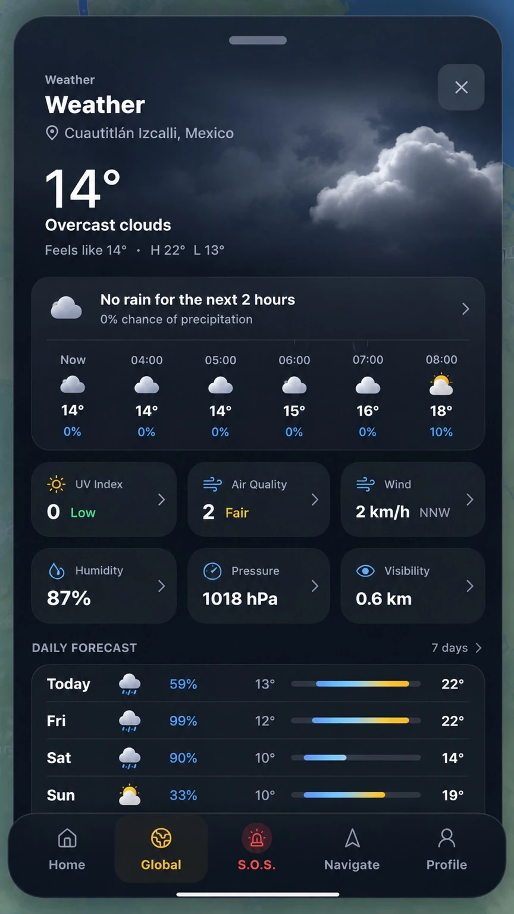

Global
Un globo para explorar eventos naturales y observar el contexto de distintas regiones.
Ver diseñoBASTION-KERN reúne mapas, meteorología y contexto geoespacial en una experiencia pensada para tu móvil.
Una perspectiva global. Información local más clara. Fuentes que puedes consultar.
Aplicación en desarrollo. El prototipo de evidencias utiliza capturas fechadas de datos oficiales.

Tiempo, de un vistazo.Vistas de diseño · datos ilustrativos, sin vigencia actual.
Conoce lo que sucede.
Conoce qué hacer después.
La propuesta: acercarte información geoespacial comprensible, con fechas, procedencia y límites visibles.
La aplicación
Estas son las áreas que guían el diseño de BASTION-KERN. Sus funciones completas siguen en desarrollo.
Un globo para explorar eventos naturales y observar el contexto de distintas regiones.
Ver diseñoPronóstico, viento y condiciones ambientales en paneles ordenados y fáciles de leer.
Ver diseñoUna propuesta para comparar trayectos, tiempos e información sobre posibles incidencias.
Ver diseñoContexto y explicaciones ligadas a la evidencia. El prototipo ya permite consultar registros y sus fuentes.
Explorar prototipoLa experiencia, en pantalla
Explora las vistas del producto y amplía cada captura para apreciar sus detalles.
Capturas y conceptos aportados por el creador. Sus cifras, rutas y avisos ilustran el diseño; no describen la situación actual ni acreditan funciones disponibles.
Un lenguaje visual más claro
Un sistema de iconos para distinguir familias de eventos. El color identifica la categoría; la gravedad y la verificación se comunican por separado.
Procedencia a la vista
El prototipo de evidencias reúne registros capturados de cuatro proveedores. Puedes revisar su origen y fecha antes de interpretar los datos.
Consultar fuentes y atribuciones ↗Los nombres identifican las fuentes. No implican asociación o respaldo. Los emblemas oficiales tienen permisos independientes.
Membresías
Primeros planes previstos para BASTION-KERN. Precios de prelanzamiento propuestos en euros.
Anual propuesto: 50% menos frente a 12 mensualidades.
Cooming Soon · Sin compra, reserva ni cobro activo. Funciones, disponibilidad y tratamiento fiscal se confirmarán antes de vender. La comparación anual usa los precios mensuales aquí mostrados; no se presenta como descuento sobre ventas anteriores.
Antes de empezar
Está en desarrollo. Puedes conocer el diseño y explorar un prototipo independiente con registros oficiales capturados. Las membresías, la monitorización continua y las funciones completas aún no están disponibles.
No. Son referencias del producto. El prototipo identifica las fechas de los registros que utiliza; recargar una vista no los convierte en información en vivo.
No es una autoridad de alertamiento ni un servicio de emergencias. Las fuentes y autoridades competentes conservan esa función. El proyecto no promete predecir sismos o garantizar rutas seguras.
Los avisos distinguen material propio, datos oficiales y recursos de terceros. No autorizan copiar o explotar material original fuera de los permisos aplicables. Una página pública no crea confidencialidad ni impide el desarrollo independiente o las excepciones legales.
Leer derechos y condiciones ↗OFFENTLOGSPOT™
Consultas sobre BASTION-KERN, colaboración, derechos y privacidad.